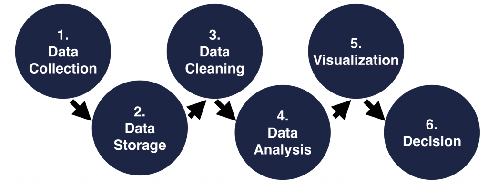

Data Analysis is the process of evaluating data using analytical and logical reasoning to examine each component of the data provided.
(2nd definition) A process of inspecting, cleansing, transforming and modelingdata with the goal of discovering useful information, informing conclusion and supporting decision-making. Data analysis has multiple facets and approaches, encompassing diverse techniques under a variety of names, and is used in different business, science, and social science domains
Data Analysis is used by different industries to aid in making business decisions. An analyst can present results visually in a chart or graph, this is called data visualization. There are several different methods including data mining, text analytics, business intelligence, and predictive analytics.
